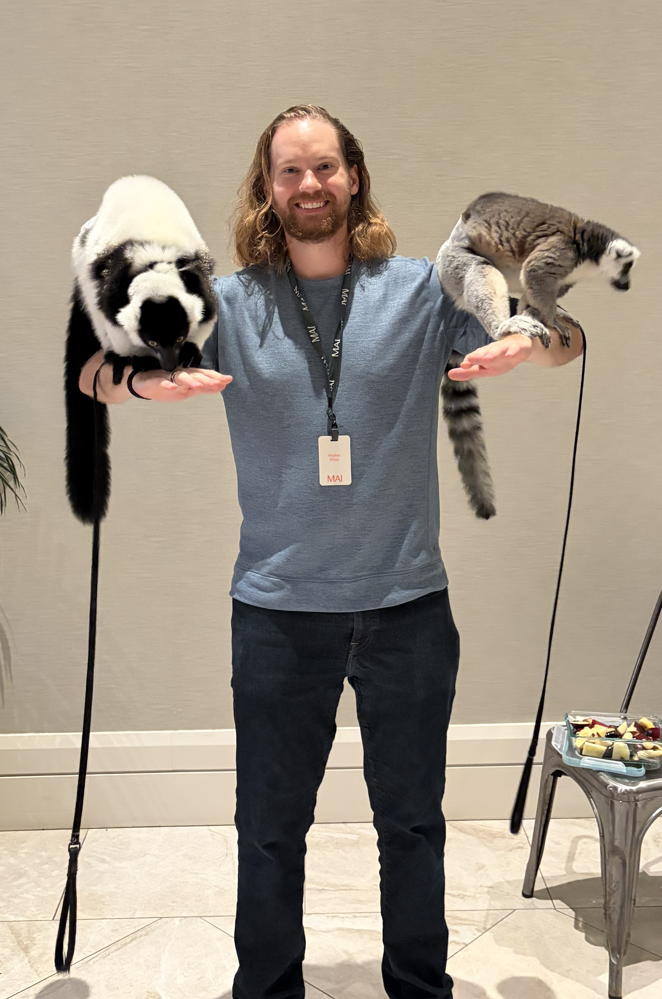

Microsoft AI · AI Safety & Alignment
Working on safer, more helpful AI.
I’m Stephen White, an AI safety researcher and engineer. I want AI to reflect our shared goals and values, and to improve life for people everywhere.
A little more about me
The work that matters
Everything we create should benefit humans and our world. Anything else shouldn't be built at all.
I want AI to have a positive impact on people and the natural world.
01 / About
About my work.
I work in AI safety and engineering. I’m interested in building systems that stay aligned with human values as they become more capable, and using AI to improve quality of life around the world.
I work on AI safety and alignment at Microsoft AI. I’m interested in making advanced AI beneficial, understanding its effects, and protecting the world we share.
Connect on LinkedIn02 / Research
Privacy that works at the scale of language.
I coauthored research on applying metric differential privacy to text, exploring ways to balance privacy, usefulness, and scalability.
PAPER DIFFERENTIAL PRIVACY Balancing Utility and Scalability in Metric Differential Privacy Read the paper03 / Beyond the work
Outside of work.
I enjoy philosophy, mathematics, and scuba diving.